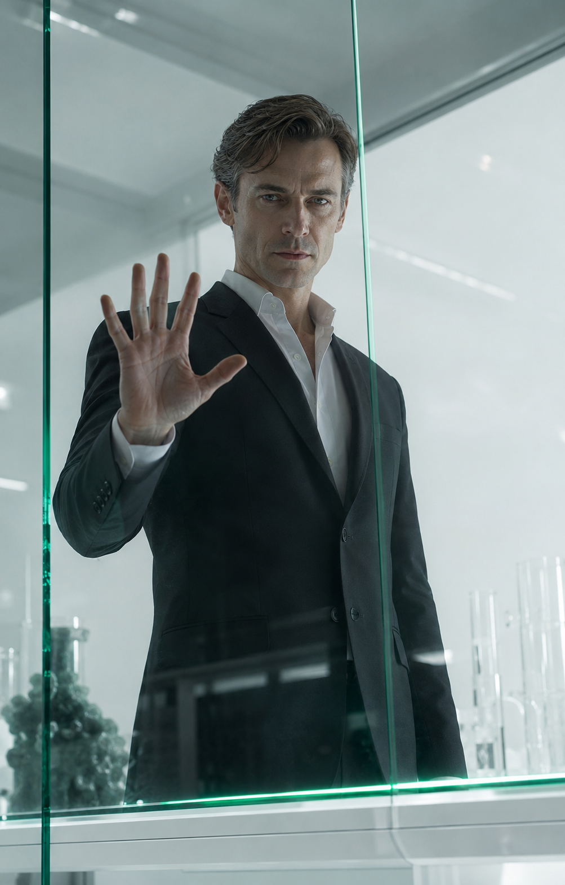
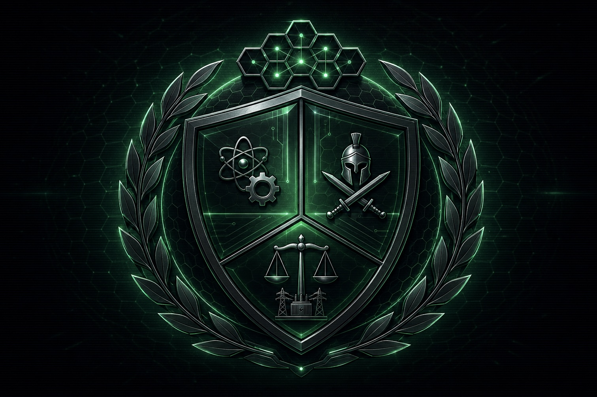

Досье · 00открыто
Архив спецблока «Грац» · Курт Вистнер
КуртВистнер
Он был прав в каждом прогнозе — и ошибся в одном: думал, что этого достаточно.
Это досье устроено как коридор его дела. Слева — стекло, за которым он держал угрозу. Справа — государство, которое он из этого построил. Между ними — дверь, которую однажды открыли без него.
‹ ›шаг по коридору — свайп, стрелки или колесо мыши
светвнизу — на полной яркости часть архива скрыта
Камера 01открыто


КуртВистнер
Спаситель Аркадии · инженер · мета-сила 0
«Проблемы человечества редко бывают сложными. Обычно они просто эмоциональны.»
Один из трёх основателей Аркадии. Создатель силового Купола и энергосистемы «Изумруд». Единственный человек своего тира без мета-силы — и один из самых опасных людей планеты.
Посмотрите на его ладонь. Он всегда стоит с той стороны стекла, где включён свет.
Камера 02открыто
Правота
Он увидел это раньше всех и не смог отвести взгляд.
В мире появилась сила, на которую не действует ни закон, ни договор, ни граница, ни угроза наказания. Один человек мог сжечь квартал и уйти по воздуху. Другой — обрушить климат целого континента. Их нельзя было ни судить, ни посадить, ни остановить, ни переубедить.
Пока политики называли это чудом, а газеты — новой эрой, Вистнер сделал единственный трезвый вывод: это не эра. Это отказ системы. И он будет нарастать.
Он не искал власти и не мстил за близких. Личной причины у него не было — и это, если вдуматься, страшнее любой личной причины. Он просто оказался единственным взрослым в комнате, полной восхищённых людей.
Его не послушали. Мир решил, что всё как-нибудь устроится, — и через несколько лет перестал существовать. Вистнер ни разу не ошибся в прогнозе. Он ошибся в другом: думал, что достаточно быть правым.
Камера 03открыто
Метод
Санитарная очистка · 13.11.2015 — 01.03.2019 · Европа
Ни облав, ни штурмовых групп, ни боёв на улицах. Сканеры, аналитика, тихий подъезд, врач, инъекция. Люди в белых халатах, спокойные, с планшетами.
Программа называлась санитарной. Не карательной, не силовой — санитарной. Как будто речь о гигиене.
Слово выбирал он лично.
Пункт содержания — Грац. Стеклянные стены по его требованию: объект должен быть виден постоянно, наблюдение не должно прерываться.
Программа началась 13 ноября 2015 года — в день его рождения. В документах это никак не отмечено. Вероятно, он просто не счёл дату значимой. Вероятно.
Он приходил в блок регулярно и всегда с планшетом. В журналах — сотни его записей. Ни одна не сообщает, что он посмотрел кому-нибудь из них в глаза.
Камера 04пусто
Камера пуста
Содержимое изъято
Реестр
Спецблок «Грац» · содержавшиеся лица
04Валентина Блажек10 лет. Прага, 14.05.2016. Операция «Тихий Сон». Первое применение нейронного подавителя.Сегодня: Квартет Ракшасов
09Дариан СорельМарсель, 22.09.2018. После серии незаконных экспериментов со светом.Сегодня: Квартет Ракшасов
11Амели БертранСодержалась там же.Сегодня: Квартет Ракшасов
14Эмиль Грант5 лет. Грац, 15.01.2019. «Начало исследований гравитационных аномалий объекта».Сегодня: Квартет Ракшасов
—Маркус КроссРебёнок. Курс препаратов-подавителей. Мета-ген заблокирован на клеточном уровне. Последствия необратимы.Сегодня: Хозяин бурь · угроза 56
—Лоренц ВейрПолевой переводчик санитарных миссий. Сканер зафиксировал аномалию. Разбираться не стали.Сегодня: Смотрящий в Бездну
Четверо из этого списка сегодня правят половиной Азии. Они познакомились здесь. Он держал их три года в соседних камерах и сам дал им время узнать друг друга.
Вейр не был опасен. Сканер сработал, система не стала разбираться, и он провёл в стекле те же годы, что и остальные. Сегодня у него культ в сибирской тайге. Единственная строка, где Вистнер ошибся, — и она тоже стала фракцией.
Дверь01.03.2019
День Стеклянных Стен
Стены выдержали. Расчёт был верен. Подвёл не материал.
Дверь открыл сотрудник спецблока. Его убедили, что происходящее аморально, — и он согласился. В том, что он видел, он не ошибался: за стеклом сидели дети.
Он ошибся в одном. Они действительно были опасны.
Наружу вышли все. Четверо стали Ракшасами. Самые нестабильные ушли в Северную Африку — и разгребать это пришлось Маркусу Кроссу, которого тот же Вистнер держал здесь ребёнком.
Он называет это «самым тяжёлым поражением в моей карьере». Вслушайтесь. Не «ошибка». Не «трагедия». Поражение — то, что случается с тем, кто играл и проиграл. Четырнадцати детей в этой формулировке нет, и он этого не замечает.
Его стены устояли. Его расчёт устоял. Систему сломала чужая жалость. С тех пор он строит мир, из которого эмоцию нужно вычесть, — не потому что она слабость, а потому что однажды она уже победила.
А вы бы открыли дверь?
Вы прошли Архив при полном свете. Одна камера так и осталась для вас пустой.
Аркадия · 01открыто

Правительство Аркадии · Триумвират СпасителейКупол
Силовое поле над Британскими островами. Держит ракеты, десант, погоду и Тенебриона. Ни одного пробоя за всю историю.
Купол держится не на героизме, а на подаче. Пока «Изумруд» даёт ток, стена стоит. Он единственный, кто понимает это до конца, — и потому единственный, кто по-настоящему боится.
«Изумруд»
Энергосистема государства. Три контура. Его шедевр — и единственное, чем он позволяет себе гордиться вслух.
«Атлант»
Известны название и факт существования.
Посмотрите на чертёж. Он не недорисован — он вырезан. Линии обрываются там, где начинается то, чего вам знать не следует. Даже в его собственном досье.
Аркадия · 02открыто
[арт: «Манта» над Белой зоной]
Пилигримы
Управление Внешних Ресурсов · куратор К. Вистнер
Герои Аркадии. Настоящие, без иронии.
Они спускаются в Белую зону — в радиоактивный ад старого мира — за изотопами, палладием, редкими металлами и довоенными архивами. Летают на «Мантах», белых скатах вертикального взлёта; за штурвалом всегда андроид серии PIL. Возвращаются не все. Вернувшихся встречают как астронавтов.
Управление возглавляет Мэтью Корсо — бывший полевой пилигрим, ныне полный киборг. Его сознание живёт в теле, спроектированном Вистнером. Корсо предан ему совершенно.
Официально всё добытое распределяет Совет Специалистов. Официально.
Довоенные алгоритмы, палладий, золото до Совета не доходят. Они уходят в Уэльс. Корсо, живущий в теле его конструкции, об этом, судя по всему, не знает.
Аркадия · 03открыто
Разведсеть
Промышленный шпионаж по всему миру. Узлы, каналы, закладки. В системе нет ни одного имени — только номера: имена привязывают, а привязанность искажает расчёт.
01Единая АмерикаРаботает свыше двадцати лет. Инженер. Женат.
07ForgeТишина 12 суток.
09ТенебрионПотерян.
Актив 01 — Уильям Купер. Он считает, что у них с Вистнером есть отношения.
Список длиннее того, что вы видите. Каждый в нём тоже считает себя единственным.
Аркадия · 04пусто
Данных нет
Объект не значится
Уэльс
С 2034 года · подземные лаборатории
Здесь заканчивается всё, что вы видели раньше.
Палладий пилигримов. Алгоритмы из Белой зоны. Технологии разведсети. Всё, что должно было принадлежать Аркадии, стекается в заброшенные шахты, где нет ни Совета Специалистов, ни Триумвирата, ни отчётности.
О содержании работ не знает никто. Включая, судя по всему, Дорна и Грея.
Он не крадёт ради денег — деньги ему не нужны. Он забирает лучшее туда, где никто не помешает довести дело до конца. Однажды он уже позволил постороннему решить за него, что морально. Больше не позволит.
Аркадия · 05открыто
Сегодня
2061 · Триумвират Спасителей · научный сектор
Руководит наукой Аркадии. Развивает Купол и энергетическую инфраструктуру, управляет внешней разведкой, ведёт собственные исследования. Рассчитывает обеспечить государству окончательное технологическое превосходство над остальным миром.
В его кабинете нет ни одной личной вещи. Ни фотографии, ни книги, ни чашки. Стеклянный стол, кресло, окно на белый город.
Ему семьдесят один год. Он работает каждый день.
Всё, что он построил, работает. Купол держит. «Изумруд» даёт ток. Государство стоит. Он был прав тогда — и он прав сейчас.
Он только больше никогда не оставит дверь там, где до неё сможет дотянуться человек.